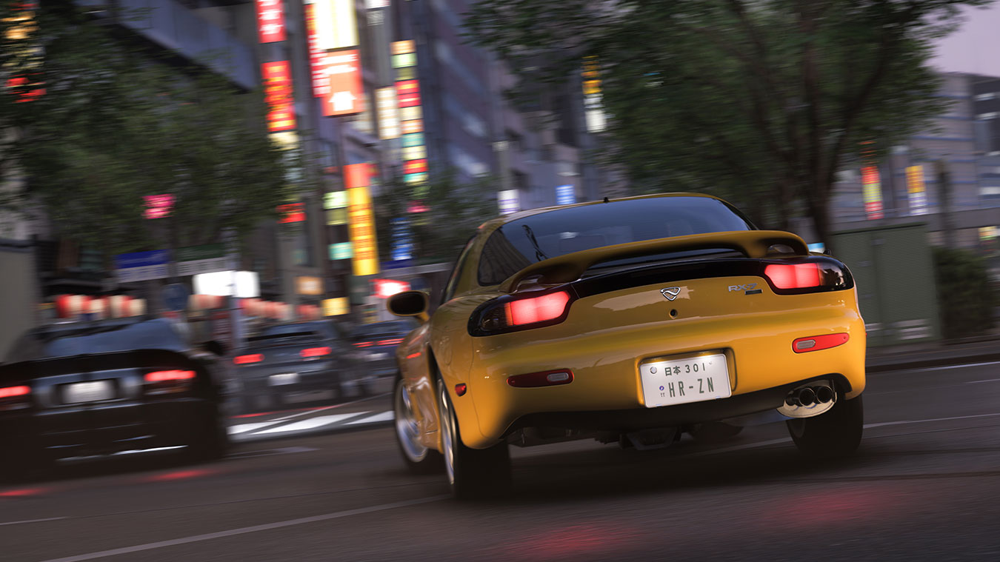
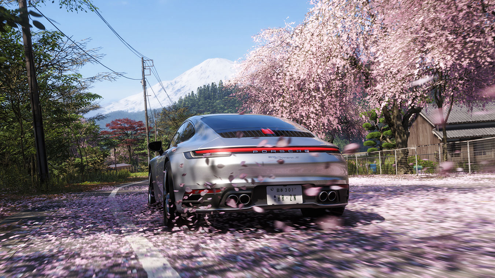

Barn Finds are FH6's most satisfying discovery mechanic. Scattered across Japan's eight regions — from the snowy plains of Hokkaido to the dense forests of Kyushu — these forgotten machines have been sitting in dilapidated barns for decades, waiting for someone to bring them back to life. This guide maps all 12 barn finds, provides acquisition tips, and outlines the most efficient route to collect them all.
Unlike buying cars from the showroom, barn find cars arrive as restoration projects. You'll need to spend CR on repairs and upgrades before they're driveable, but the cars themselves are free — and many are legendary machines that would cost tens of millions in the showroom.



Complete Barn Finds Table
| # | Car Name | Year | Class | Drive | Difficulty | Region | Tips | |
|---|---|---|---|---|---|---|---|---|
| 1 | Toyota 2000GT (1967) | 1967 | A | RWD | Hard | Kyoto Region | Located deep in mountain forest. Requires clearing overgrown path first. | |
| 2 | Nissan Fairlady Z432 (1970) | 1970 | B | RWD | Medium | Osaka Region | Inside a red barn near coastal highway. Look for faded Z432 badge. | |
| 3 | Mazda RX-7 Savanna (1978) | 1978 | C | RWD | Easy | Hiroshima Region | Easiest barn find. Barn door is open. Car needs basic restoration. | |
| 4 | Honda S800 (1966) | 1966 | D | RWD | Easy | Tokyo Region | Urban barn in industrial district near Tokyo Port. Quick access. | |
| 5 | Toyota Celica GT-Four (1990) | 1990 | B | AWD | Medium | Nagoya Region | Rally history car. Barn covered in old rally posters. AWD makes it versatile. | |
| 6 | Mitsubishi Lancer Evolution VI (1999) | 1999 | S2 | AWD | Hard | Hokkaido Region | Snow-covered barn. Check roof structure first — may collapse on approach. | |
| 7 | Nissan Silvia Kouki (1999) | 1999 | B | RWD | Medium | Mount Akagi Region | The iconic Silvia spec.R silhouette. Best drift project in the game. | |
| 8 | Mazda Cosmo 110S (1970) | 1970 | A | RWD | Hard | Hiroshima Region | Unique rotary engine. Barn is unmarked and easy to miss — look for stone walls. | |
| 9 | Subaru 360 Estate (1965) | 1965 | D | RWD | Easy | Nagoya Region | Adorable kei-car. Low performance but high collectible value. Unique silhouette. | |
| 10 | Toyota Crown Athlete (1991) | 1991 | C | RWD | Medium | Kyoto Region | Hidden VIP style. The sleeper sedan nobody expects to be fast. | |
| 11 | Datsun 240Z (1971) | 1971 | A | RWD | Medium | Okinawa Region | Classic Z-car heritage. Found in barn near beach road. Coastal rust is a concern. | |
| 12 | Mitsubishi FTO (1997) | 1997 | S1 | RWD | Hard | Kyushu Region | MR2 rival, often overlooked. The final barn find — rewards patience. High-class performer. |
Barn Find Tips & Strategies
1. Listen for Ambient Sounds
Barn find locations have subtle audio cues — creaking wood, wind through corrugated steel, the drip of water from rusty roofs. Drive slowly through rural areas with your sound up. If you hear something that breaks the ambient wind noise, investigate.
2. Use the MinimapFilter
The in-game minimap has a "Discovery" filter toggle. Set it to highlight abandoned structures. Barns show as small orange diamonds on the map. Check every orange diamond you pass — some are decoys (old houses), but others are real barns.
3. Clear the Path First
Some barns require you to drive through overgrown vegetation or pull aside debris. Don't try to ram through — stop, get out (in free roam), and manually clear the path. Attempting to drive through results in getting stuck and wasting time.
4. The Hokkaido Snow Barn Trick
Barn #6 in Hokkaido is buried under snow. The barn's roof has collapsed partially. Drive up from the downhill side — approaching uphill causes the unstable structure to collapse and blocks entry. Park at the bottom and walk in on foot.
5. Restoration Priority
Not all barn find cars are worth restoring immediately. Prioritize RWD drift chassis (Silvia, 240Z, RX-7) and the rare A-class sports cars (2000GT, Cosmo, FTO) for the biggest impact on your garage. The S800 and 360 are novelties — restore them last.
Efficient Collection Route
Speedrunners have mapped the optimal barn find route to minimize backtracking. Follow this order:
- Tokyo (Barn #4) — S800. Industrial district, easiest access. Start here.
- Osaka (Barn #2) — Fairlady Z432. Fairly accessible from Tokyo via highway.
- Hiroshima (Barn #3) — RX-7 Savanna. Red barn, door open. Quick stop.
- Nagoya (Barn #9) — Subaru 360 Estate. Small and easy.
- Nagoya (Barn #5) — Celica GT-Four. Rally barn, slightly inland.
- Mount Akagi (Barn #7) — Silvia Kouki. Mountain region detour — worth it.
- Kyoto (Barn #10) — Crown Athlete. Hidden VIP sleeper.
- Kyoto (Barn #1) — Toyota 2000GT. Deep forest — finish Kyoto region.
- Hokkaido (Barn #6) — Lancer Evo VI. Long trip north — save for late.
- Okinawa (Barn #11) — Datsun 240Z. Beach region beauty.
- Kyushu (Barn #12) — Mitsubishi FTO. Final barn find — highest class.
- Hiroshima (Barn #8) — Cosmo 110S. Last check — stone wall barn.
Total CR Investment
Restoring all 12 barn finds typically costs 8-12 million CR depending on your upgrade preferences. That's a significant investment, but these cars are irreplaceable — you cannot buy them from the showroom. Prioritize the S1/S2 class barn finds (Evo VI, FTO) for competitive racing immediately after restoration.